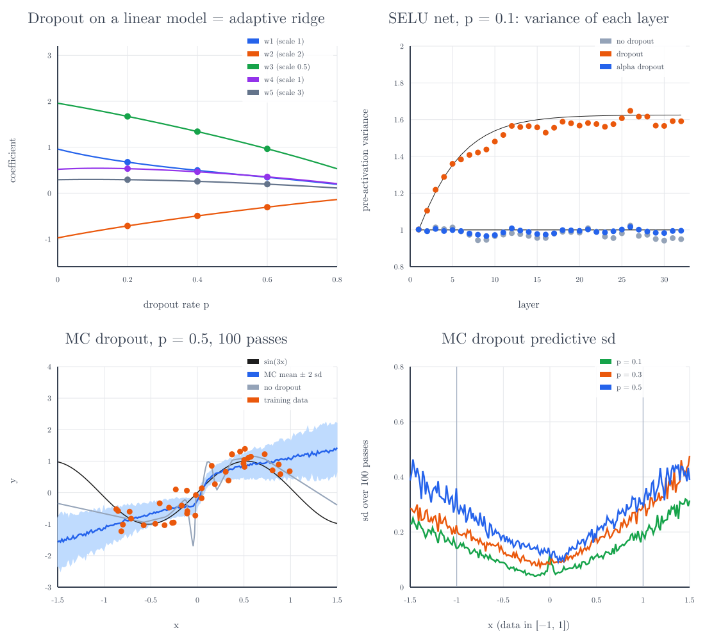
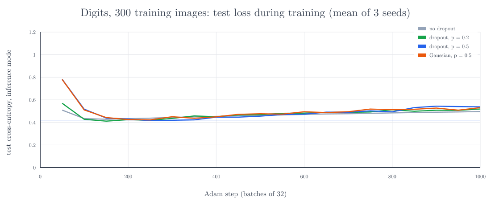

Dropout: Moments, Implicit Ridge, Self-Normalisation and Monte Carlo Uncertainty
Abstract
Dropout zeroes each unit with probability \(p\) while training and rescales the survivors by \(1/(1-p)\). This report checks datamunge's dropout and four new variants against their defining moments. It derives the exact expected loss of dropout on a linear model: least squares plus a ridge penalty that weights each coefficient by its feature's energy. Monte Carlo over 20000 masks agrees with it to within 1.4 standard errors, and SGD with dropout converges to the closed-form minimiser to within 0.003. Plain dropout moves a 32-layer SELU network's fixed point from variance 1 to the predicted 1.63, while alpha dropout keeps it at 1. On a small regression, dropout cuts the test error by a factor of 7 to 11. Monte Carlo dropout gives an uncertainty band that widens away from the data, but the band misses the true function at every grid point beyond the data. On a 300-image digits training set, dropout barely changes accuracy and worsens the inference-mode loss, while averaging 100 stochastic passes gives the best test loss of all, 0.41 against 0.57 without dropout.
The problem
Dropout (Hinton et al., 2012; Srivastava et al., 2014) is a regulariser for neural networks: while training, each hidden unit is removed at random with probability \(p\). Its usual justifications are informal. It stops units from co-adapting, or it averages an exponential number of thinned networks. Both are hard to check. Some of its effects can be made exact, though. For a linear model it is a specific penalty on the weights. In a deep network it changes the variance that the signal settles to, which is what self-normalising networks rely on. Run at test time, it gives a distribution of predictions that is widely used as an uncertainty estimate.
This report replaces the original example examples/nn/0_foundations/0.2_reusable_layer_library/dropout.cpp. That example checked the mask statistics and the inference identity, fitted a small network to 40 noisy points with and without dropout, and used
Monte Carlo dropout for a predictive spread. All three are kept here, with the theory behind each and four variants added to the library.
The method
Inverted dropout and its variants
With keep probability \(k=1-p\) and a mask \(m\sim\mathrm{Bernoulli}(k)\) drawn independently for every element, inverted dropout computes \(y=x\,m/k\) while training and \(y=x\) at inference. Then
and \(y\) takes only the values 0 and \(x/k\). Four variants are new in datamunge. nn::gaussian_dropout multiplies by \(\xi\sim\mathcal N(1,p/(1-p))\), which has the same mean and variance as \(m/k\) (Srivastava et al., 2014). nn::spatial_dropout shares one mask
over all positions of a channel, for feature maps whose neighbouring values are nearly equal (Tompson et al., 2015). nn::drop_path shares one mask over all of an example, to skip a residual branch for that example (stochastic depth; Huang et al., 2016).
nn::alpha_dropout is for self-normalising networks (Klambauer et al., 2017). Their SELU activation \(f(z)=\lambda z\) for \(z>0\) and \(\lambda\alpha(e^z-1)\) otherwise, with LeCun-normal weights, drives every layer's pre-activations towards mean 0 and variance 1. Setting
units to 0 breaks this, because 0 is not a typical SELU output. Alpha dropout sets dropped units to the saturation value \(\alpha'=-\lambda\alpha\approx-1.7581\) instead and then applies \(y=a\,u+b\) to \(u=x\,m+\alpha'(1-m)\). For an input with mean 0 and variance 1,
\(\mathbb E[u]=p\alpha'\) and \(\operatorname{Var}[u]=k+p\alpha'^2-p^2\alpha'^2=k(1+p\alpha'^2)\), so
restore mean 0 and variance 1.
Dropout on a linear model is a ridge penalty
Take least squares with dropout on the inputs: \(L(w)=\frac1n\|y-\tilde Xw\|^2\) with \(\tilde X=X\odot M/k\). For row \(i\), \(\tilde x_i\cdot w\) has mean \(x_i\cdot w\) and variance \(\frac pk\sum_jx_{ij}^2w_j^2\), since the masks are independent. The expected squared residual is the squared mean residual plus this variance, so
minimised by \(w_p=\big(X^\top X+\lambda\operatorname{diag}(X^\top X)\big)^{-1}X^\top y\) with \(\lambda=p/(1-p)\) (Wager, Wang and Liang, 2013). This is ridge regression with each coefficient's penalty scaled by its feature's energy \(\sum_ix_{ij}^2\), so rescaling a feature does not change the fit. Gaussian dropout has the same first two moments, and the expected loss of a linear model depends on nothing else, so its expected loss is the same. Each SGD step with a fresh mask uses an unbiased gradient of \(\mathbb E_ML\), so SGD with a decaying step size converges to \(w_p\). Averaging the iterates (Polyak and Juditsky, 1992) removes most of the remaining noise.
Dropout in a self-normalising network
Each layer of a wide network with LeCun-normal weights (\(nv_w=1\)) maps the pre-activation variance \(q\) to the mean of the squared input of the next layer. That gives three recursions,
for no dropout, plain dropout and alpha dropout, with \(Z\sim\mathcal N(0,q)\) and \(\mu=\mathbb E f(Z)\) (computed with nn::activation_moments). SELU makes \(q=1\) a fixed point of the first map, and the alpha-dropout map keeps it. Plain dropout divides by \(k\), which moves the fixed point. At inference the network then sees variances
it was not trained on.
Monte Carlo dropout
Keeping dropout on at test time and averaging \(T\) stochastic forward passes gives a predictive mean and spread. Gal and Ghahramani (2016) interpret this as approximate Bayesian inference, in which the masks sample from an approximate posterior over the weights. The spread measures disagreement among thinned networks. It is not guaranteed to cover the truth, and it need not shrink as data are added (Osband, 2016). For classification, averaging the predicted probabilities over passes gives a smoother predictive distribution than one pass with dropout off.
Simple examples
Mask statistics and the variants
The program repeats the original example's statistics on 100000 units of \(x=1\) for five rates, and checks that inference mode is the identity. It then measures the moments of the variants at rate 0.2, and checks that the spatial and drop-path masks are shared as intended.
#include <dm/dm.hpp>
namespace nn = dm::nn;
using nn::Tensor;
const auto F64 = nn::DType::Float64;
int main() {
nn::Generator gen(7);
const std::int64_t n = 100000;
// 1. Inverted dropout on x = 1: fraction dropped, mean, variance against p / (1 − p), and the values taken.
std::print("| rate p | share of zeros | mean | variance | p/(1 − p) | values |\n| ---: | ---: | ---: | ---: | ---: | :--- |\n");
const Tensor one = nn::ones({n}, F64);
for (double p : {0.0, 0.1, 0.25, 0.5, 0.8}) {
const Tensor y = nn::dropout(one, p, true, gen);
const double zeros = nn::mean(nn::cast(nn::equal(y, 0.0), F64)).item(), m = nn::mean(y).item();
const double v = nn::mean(nn::square(y - m)).item();
std::print("| {} | {:.4f} | {:.4f} | {:.4f} | {:.4f} | {{0, {:.4g}}} |\n", p, zeros, m, v, p / (1 - p), nn::max(y).item());
}
const Tensor xr = nn::normal({n}, 0, 1, gen, F64);
std::print("\nInference (training = false), p = 0.5: {} of {} outputs identical to the input.\n",
static_cast<std::int64_t>(nn::sum(nn::cast(nn::equal(nn::dropout(xr, 0.5, false, gen), xr), F64)).item()), n);
// 2. The variants at rate 0.2: Gaussian dropout on x = 1, and alpha dropout on standard normal inputs
// (plain dropout shown for comparison).
std::print("\n| variant, p = 0.2 | input | mean | variance | target mean, variance |\n| :--- | :--- | ---: | ---: | :--- |\n");
auto moments = [](const Tensor& y) {
const double m = nn::mean(y).item();
return std::pair{m, nn::mean(nn::square(y - m)).item()};
};
{
const auto [m, v] = moments(nn::gaussian_dropout(one, 0.2, true, gen));
std::print("| gaussian_dropout | 1 | {:.4f} | {:.4f} | 1, 0.25 (as dropout) |\n", m, v);
const auto [m2, v2] = moments(nn::dropout(xr, 0.2, true, gen));
std::print("| dropout | N(0, 1) | {:.4f} | {:.4f} | 0, 1.25 |\n", m2, v2);
const auto [m3, v3] = moments(nn::alpha_dropout(xr, 0.2, true, gen));
std::print("| alpha_dropout | N(0, 1) | {:.4f} | {:.4f} | 0, 1 |\n", m3, v3);
// SELU outputs of N(0, 1) inputs have mean ≈ 0 and variance ≈ 1 at the fixed point; alpha dropout keeps that.
const Tensor s = nn::selu(xr);
const auto [m4, v4] = moments(s);
const auto [m5, v5] = moments(nn::alpha_dropout(s, 0.2, true, gen));
std::print("| alpha_dropout | selu(N(0, 1)): mean {:.4f}, variance {:.4f} | {:.4f} | {:.4f} | unchanged for mean 0, variance 1 |\n", m4, v4, m5, v5);
}
// 3. Mask sharing: spatial dropout on ones [4, 6, 6, 8] and drop path on ones [8, 6, 6, 4].
{
const Tensor s = nn::spatial_dropout(nn::ones({4, 6, 6, 8}, F64), 0.5, true, gen);
int constant = 0, kept = 0;
for (std::int64_t i = 0; i < 4; ++i)
for (std::int64_t c = 0; c < 8; ++c) {
const Tensor map = nn::slice(s, {i, 0, 0, c}, {1, 6, 6, 1});
constant += nn::max(map).item() == nn::min(map).item();
kept += nn::max(map).item() > 0;
}
const Tensor d = nn::drop_path(nn::ones({8, 6, 6, 4}, F64), 0.25, true, gen);
int dconst = 0;
std::string pattern;
for (std::int64_t i = 0; i < 8; ++i) {
const Tensor ex = nn::slice(d, {i, 0, 0, 0}, {1, 6, 6, 4});
dconst += nn::max(ex).item() == nn::min(ex).item();
pattern += std::format("{}{:.4g}", i ? ", " : "", nn::max(ex).item());
}
std::print("\nspatial_dropout, p = 0.5, ones [4, 6, 6, 8]: {} of 32 (example, channel) maps constant over the 36 positions, {} kept (value 2).\n", constant, kept);
std::print("drop_path, p = 0.25, ones [8, 6, 6, 4]: {} of 8 examples constant over their 144 entries; values per example: {}.\n", dconst, pattern);
}
}| rate p | share of zeros | mean | variance | p/(1 − p) | values |
|---|---|---|---|---|---|
| 0 | 0.0000 | 1.0000 | 0.0000 | 0.0000 | {0, 1} |
| 0.1 | 0.0994 | 1.0007 | 0.1105 | 0.1111 | {0, 1.111} |
| 0.25 | 0.2495 | 1.0007 | 0.3329 | 0.3333 | {0, 1.333} |
| 0.5 | 0.4979 | 1.0042 | 1.0000 | 1.0000 | {0, 2} |
| 0.8 | 0.7998 | 1.0009 | 4.0027 | 4.0000 | {0, 5} |
Inference (training = false), p = 0.5: 100000 of 100000 outputs identical to the input.
| variant, p = 0.2 | input | mean | variance | target mean, variance |
|---|---|---|---|---|
| gaussian_dropout | 1 | 0.9986 | 0.2496 | 1, 0.25 (as dropout) |
| dropout | N(0, 1) | 0.0029 | 1.2554 | 0, 1.25 |
| alpha_dropout | N(0, 1) | 0.0038 | 1.0030 | 0, 1 |
| alpha_dropout | selu(N(0, 1)): mean 0.0052, variance 1.0036 | 0.0048 | 1.0073 | unchanged for mean 0, variance 1 |
spatial_dropout, p = 0.5, ones [4, 6, 6, 8]: 32 of 32 (example, channel) maps constant over the 36 positions, 14 kept (value 2). drop_path, p = 0.25, ones [8, 6, 6, 4]: 8 of 8 examples constant over their 144 entries; values per example: 1.333, 1.333, 0, 1.333, 0, 0, 1.333, 1.333.
The share of zeros is within 0.0007 of \(p\) at every rate, the mean within 0.0012 of 1 and the variance within 0.0006 of \(p/(1-p)\). The only values are 0 and \(1/(1-p)\). In inference mode all 100000 outputs equal the input exactly. Gaussian dropout has mean 0.9997 and variance 0.2500, the moments of the Bernoulli mask at \(p=0.2\). On standard normal inputs plain dropout raises the variance to 1.249, the predicted 1.25, while alpha dropout keeps it at 1.0015 with mean \(-0.0024\). SELU applied to standard normal inputs gives mean \(-0.004\) and variance 0.998, close to its fixed point, and alpha dropout leaves these at \(-0.005\) and 0.999. All 32 spatial-dropout maps are constant over their 36 positions, with 17 kept at value 2. All 8 drop-path examples are constant, two of them dropped and six scaled to \(4/3\).
Checking the theory
Implicit ridge, the SELU fixed point and Monte Carlo dropout
The program builds a regression with 60 rows and 5 correlated columns of scales 1, 2, 0.5, 1 and 3. For a fixed random \(w\) it compares the closed-form expected loss with an average over 20000 masks, for Bernoulli and Gaussian dropout. It then runs 40000 steps of full-batch SGD with a fresh mask each step, with step size \(0.004/(1+t/4000)\), and averages the second half of the iterates. Next comes a 32-layer SELU network of width 256 without bias, on 1024 standard normal inputs, with dropout at rate 0.1 after every activation. Last, the program repeats the original regression: an MLP \(1\to256\to256\to1\) with ReLU, fitted by 1000 Adam steps in single precision to 40 points of \(\sin3x+\mathcal N(0,0.3^2)\) on \([-1,1]\), with dropout after both hidden layers and three seeds per rate. It runs 100 stochastic passes on a grid over \([-1.5,1.5]\).
#include <dm/dm.hpp>
namespace nn = dm::nn;
using nn::Activation;
using nn::Tensor;
const auto F64 = nn::DType::Float64;
using dm::graphics::RGB;
int main() {
std::filesystem::create_directories("build");
nn::Generator gen(11);
auto fig = dm::graphics::RLayout::create(2, 2);
// 1. Linear regression with dropout on the inputs. n = 60 rows, d = 5 correlated columns of different scales.
const std::int64_t n = 60, d = 5;
const Tensor scales = nn::tensor({1.0, 2.0, 0.5, 1.0, 3.0}, {}, F64);
const Tensor Z = nn::normal({n, d}, 0, 1, gen, F64);
const Tensor X = (Z + nn::slice(Z, {0, 0}, {n, 1}) * 0.6) * scales; // every column shares 0.6 of column 0
const Tensor beta = nn::tensor({1.0, -1.0, 2.0, 0.5, 0.3}, {d, 1}, F64);
const Tensor y = nn::matmul(X, beta) + nn::normal({n, 1}, 0, 0.5, gen, F64);
const Tensor col_sq = nn::sum(nn::square(X), {0}); // Σ_i x_ij²
auto expected_loss = [&](const Tensor& w, double p) {
const double ols = nn::sum(nn::square(y - nn::matmul(X, w))).item();
return (ols + p / (1 - p) * nn::sum(col_sq * nn::square(nn::reshape(w, {d}))).item()) / n;
};
auto ridge = [&](double p) { // (XᵀX + λ diag(XᵀX))⁻¹ Xᵀy, λ = p / (1 − p)
const Tensor A = nn::matmul(X, X, true, false) + nn::matrix_diag(col_sq) * (p / (1 - p));
return nn::solve(A, nn::matmul(X, y, true, false));
};
{
const Tensor w = nn::normal({d, 1}, 0, 1, gen, F64);
std::print("| loss of a fixed w under | Monte Carlo, 20000 masks (± standard error) | closed form | difference in standard errors |\n| :--- | ---: | ---: | ---: |\n");
for (double p : {0.2, 0.5}) {
for (bool gaussian : {false, true}) {
double mc = 0, mc2 = 0;
for (int r = 0; r < 20000; ++r) {
const Tensor Xd = gaussian ? nn::gaussian_dropout(X, p, true, gen) : nn::dropout(X, p, true, gen);
const double l = nn::sum(nn::square(y - nn::matmul(Xd, w))).item() / n;
mc += l / 20000, mc2 += l * l / 20000;
}
const double cf = expected_loss(w, p), se = std::sqrt((mc2 - mc * mc) / 20000);
std::print("| {} dropout, p = {} | {:.4f} ± {:.4f} | {:.4f} | {:.1f} |\n", gaussian ? "Gaussian" : "Bernoulli", p, mc, se, cf, (mc - cf) / se);
}
}
}
// SGD with a fresh mask every step (full batch), decaying step size, averaging the second half of the iterates.
std::print("\n| p | closed-form minimiser | SGD with dropout, averaged | max abs. difference | Gaussian dropout SGD, max abs. difference |\n| ---: | :--- | :--- | ---: | ---: |\n");
auto vec_str = [](const Tensor& w) {
std::string s = "(";
for (std::int64_t j = 0; j < w.numel(); ++j) s += std::format("{}{:.3f}", j ? ", " : "", w.at({j, 0}));
return s + ")";
};
std::vector<double> sgd_p;
std::vector<std::vector<double>> sgd_w(d);
for (double p : {0.2, 0.4, 0.6}) {
const Tensor wr = ridge(p);
double gdiff = 0;
Tensor avg_b;
for (bool gaussian : {false, true}) {
Tensor w = nn::zeros({d, 1}, F64), avg = nn::zeros({d, 1}, F64);
const int steps = 40000;
for (int t = 0; t < steps; ++t) {
const Tensor Xd = gaussian ? nn::gaussian_dropout(X, p, true, gen) : nn::dropout(X, p, true, gen);
const Tensor g = nn::matmul(Xd, nn::matmul(Xd, w) - y, true, false) * (2.0 / n);
w = w - g * (0.004 / (1 + t / 4000.0));
if (t >= steps / 2) avg = avg + w / (steps / 2.0);
}
if (gaussian) gdiff = nn::max(nn::abs(avg - wr)).item();
else avg_b = avg;
}
sgd_p.push_back(p);
for (std::int64_t j = 0; j < d; ++j) sgd_w[j].push_back(avg_b.at({j, 0}));
std::print("| {} | {} | {} | {:.3f} | {:.3f} |\n", p, vec_str(wr), vec_str(avg_b), nn::max(nn::abs(avg_b - wr)).item(), gdiff);
}
{
const Tensor ols = ridge(0.0);
std::print("Least squares (p = 0): {}; true β = {}.\n", vec_str(ols), vec_str(beta));
auto pl = dm::graphics::RPlot::create();
const std::vector<RGB> colours{{37, 99, 235}, {234, 88, 12}, {22, 163, 74}, {147, 51, 234}, {100, 116, 139}};
std::vector<double> ps;
for (int k = 0; k <= 40; ++k) ps.push_back(0.02 * k);
for (std::int64_t j = 0; j < d; ++j) {
std::vector<double> path;
for (double p : ps) path.push_back(ridge(p).at({j, 0}));
pl.lines(ps, path, std::format("w{} (scale {})", j + 1, scales.at({j})), colours[j], 2.2).points(sgd_p, sgd_w[j], "", colours[j], 5);
}
pl.x_limits(0, 0.8).y_limits(-1.6, 3.2).title("Dropout on a linear model = adaptive ridge").x_label("dropout rate p").y_label("coefficient");
fig.add(pl);
}
// 2. A 32-layer SELU network (width 256, LeCun normal, no bias) on standard normal inputs: variance of each
// layer's pre-activations with no dropout, plain dropout and alpha dropout at p = 0.1 after every SELU,
// against the mean-field recursions.
{
const int depth = 32, width = 256;
const double p = 0.1, k = 1 - p;
const double ap = -1.0507009873554805 * 1.6732632423543772, a = 1 / std::sqrt(k * (1 + p * ap * ap));
const Tensor x0 = nn::normal({1024, width}, 0, 1, gen, F64);
std::vector<double> layers;
for (int l = 1; l <= depth; ++l) layers.push_back(l);
struct Run { std::string label; int kind; RGB colour; std::vector<double> var, theory; };
std::vector<Run> runs = {{"no dropout", 0, {148, 163, 184}, {}, {}}, {"dropout", 1, {234, 88, 12}, {}, {}}, {"alpha dropout", 2, {37, 99, 235}, {}, {}}};
nn::NoGradGuard ng;
for (auto& r : runs) {
nn::ParameterStore st(5, F64);
nn::Generator dg(17);
Tensor h = x0;
double q = 1.0; // pre-activation variance, mean field
for (int l = 1; l <= depth; ++l) {
const Tensor z = nn::dense(st, std::format("l{}", l), h, width, {.bias = false, .init = nn::init::lecun_normal()});
r.var.push_back(nn::mean(nn::square(z)).item());
r.theory.push_back(q);
const Tensor s = nn::selu(z);
h = r.kind == 0 ? s : r.kind == 1 ? nn::dropout(s, p, true, dg) : nn::alpha_dropout(s, p, true, dg);
// Next pre-activation variance = E[h²] (n Var(w) = 1).
const auto mom = nn::activation_moments(Activation::Selu, q);
if (r.kind == 0) q = mom.second_moment;
else if (r.kind == 1) q = mom.second_moment / k;
else {
const double mu = mom.mean, eu = k * mu + p * ap, eu2 = k * mom.second_moment + p * ap * ap;
q = a * a * (eu2 - eu * eu) + (a * k * mu) * (a * k * mu);
}
}
std::print("{}: pre-activation variance at layers 1, 8, 16, 32 = {:.3f}, {:.3f}, {:.3f}, {:.3f}; mean-field {:.3f}, {:.3f}, {:.3f}, {:.3f}.\n", r.label, r.var[0], r.var[7], r.var[15],
r.var[31], r.theory[0], r.theory[7], r.theory[15], r.theory[31]);
}
auto pl = dm::graphics::RPlot::create();
for (const auto& r : runs) pl.lines(layers, r.theory, "", {30, 30, 30}, 1);
for (const auto& r : runs) pl.points(layers, r.var, r.label, r.colour, 4.5);
pl.x_limits(0, 33).y_limits(0.8, 2.0).title("SELU net, p = 0.1: variance of each layer").x_label("layer").y_label("pre-activation variance");
fig.add(pl);
}
// 3. The original example's regression: an MLP 1-256-256-1 fit to 40 points of sin(3x) + N(0, 0.3²) on [−1, 1],
// 1000 Adam steps in single precision, with dropout after each hidden layer; Monte Carlo dropout at test time (100 passes).
std::mt19937_64 rng(42);
std::uniform_real_distribution<double> U(-1, 1);
std::normal_distribution<double> noise(0, 0.3);
std::vector<double> xtr, ytr, xte;
for (int i = 0; i < 40; ++i) {
const double v = U(rng);
xtr.push_back(v), ytr.push_back(std::sin(3 * v) + noise(rng));
}
for (int i = 0; i <= 200; ++i) xte.push_back(-1.5 + 3.0 * i / 200);
const auto F32 = nn::DType::Float32; // single precision keeps the twelve fits quick
const Tensor Xtr = nn::cast(nn::from_vector(xtr, {40, 1}), F32), Ytr = nn::cast(nn::from_vector(ytr, {40, 1}), F32), Xte = nn::cast(nn::from_vector(xte, {201, 1}), F32);
std::vector<double> xin, yin;
for (double v : xte)
if (std::abs(v) <= 1) xin.push_back(v), yin.push_back(std::sin(3 * v));
const Tensor Xin = nn::cast(nn::from_vector(xin, {static_cast<std::int64_t>(xin.size()), 1}), F32), Yin = nn::cast(nn::from_vector(yin, {static_cast<std::int64_t>(yin.size()), 1}), F32);
struct McFit { std::vector<double> mean, sd, pred; double train, test; };
auto train = [&](double p, std::uint64_t seed) {
nn::ParameterStore st(seed, F32);
nn::Generator d1(seed * 10 + 1), d2(seed * 10 + 2);
const nn::DenseOptions hid{.activation = Activation::Relu, .init = nn::init::he_uniform()};
auto f = [&](const Tensor& x, bool training) {
Tensor h = nn::dropout(nn::dense(st, "h1", x, 256, hid), p, training, d1);
h = nn::dropout(nn::dense(st, "h2", h, 256, hid), p, training, d2);
return nn::dense(st, "out", h, 1);
};
(void)f(Xtr, false);
nn::Optimizer adam(st, 1e-3, {.kind = nn::OptimizerKind::Adam});
for (int s = 0; s < 1000; ++s) adam.minimize(nn::mse(f(Xtr, true), Ytr));
nn::NoGradGuard ng;
McFit r;
r.train = nn::mse(f(Xtr, false), Ytr).item(), r.test = nn::mse(f(Xin, false), Yin).item();
const Tensor yp = f(Xte, false);
for (int i = 0; i < 201; ++i) r.pred.push_back(yp.at({i, 0}));
if (p > 0) {
std::vector<double> s1(201, 0), s2(201, 0);
for (int k = 0; k < 100; ++k) {
const Tensor yk = f(Xte, true);
for (int i = 0; i < 201; ++i) {
const double prediction = yk.at({i, 0});
if (!std::isfinite(prediction))
throw std::runtime_error("Nonfinite Monte Carlo dropout prediction");
s1[i] += prediction / 100;
s2[i] += prediction * prediction / 100;
}
}
for (int i = 0; i < 201; ++i) r.mean.push_back(s1[i]), r.sd.push_back(std::sqrt(std::max(0.0, s2[i] - s1[i] * s1[i])));
if (*std::max_element(r.sd.begin(), r.sd.end()) <= 0.0)
throw std::runtime_error("Monte Carlo dropout produced no predictive spread");
if (yp.to_vector<float>() != f(Xte, false).to_vector<float>())
throw std::runtime_error("Monte Carlo sampling changed inference predictions");
}
return r;
};
std::print("\n| dropout rate | train MSE, seeds 1–3 | mean | test MSE on [−1, 1], seeds 1–3 | mean |\n| ---: | :--- | ---: | :--- | ---: |\n");
std::map<double, McFit> first_seed;
for (double p : {0.0, 0.1, 0.3, 0.5}) {
std::vector<double> tr, te;
for (std::uint64_t seed : {1, 2, 3}) {
const McFit r = train(p, seed);
tr.push_back(r.train), te.push_back(r.test);
if (seed == 1) first_seed[p] = r;
}
std::print("| {} | {:.4f}, {:.4f}, {:.4f} | {:.4f} | {:.4f}, {:.4f}, {:.4f} | {:.4f} |\n", p, tr[0], tr[1], tr[2], (tr[0] + tr[1] + tr[2]) / 3, te[0], te[1], te[2],
(te[0] + te[1] + te[2]) / 3);
}
{
const McFit& r = first_seed[0.5];
auto pl = dm::graphics::RPlot::create();
const double ylo = std::floor(std::ranges::min(first_seed[0.0].pred) - 0.3);
std::print("Lowest value of the fit without dropout on the test grid: {:.2f} (axis from {}).\n", std::ranges::min(first_seed[0.0].pred), ylo);
std::vector<double> bx, by;
for (int i = 0; i <= 200; ++i) bx.push_back(xte[i]), by.push_back(r.mean[i] + 2 * r.sd[i]);
for (int i = 200; i >= 0; --i) bx.push_back(xte[i]), by.push_back(r.mean[i] - 2 * r.sd[i]);
std::vector<double> truth;
for (double v : xte) truth.push_back(std::sin(3 * v));
pl.polygon(bx, by, {191, 219, 254}).lines(xte, truth, "sin(3x)", {30, 30, 30}, 1.5).lines(xte, r.mean, "MC mean ± 2 sd", {37, 99, 235}, 2.5)
.lines(xte, first_seed[0.0].pred, "no dropout", {148, 163, 184}, 2)
.points(xtr, ytr, "training data", {234, 88, 12}, 4.5).x_limits(-1.5, 1.5).y_limits(ylo, 4).title("MC dropout, p = 0.5, 100 passes").x_label("x").y_label("y");
fig.add(pl);
std::print("MC dropout, p = 0.5, seed 1: predictive sd at x = −1.5, −1, 0, 1, 1.5: {:.3f}, {:.3f}, {:.3f}, {:.3f}, {:.3f}.\n", r.sd[0], r.sd[33], r.sd[100], r.sd[167], r.sd[200]);
int covered = 0, outside = 0;
for (int i = 0; i <= 200; ++i)
if (std::abs(xte[i]) > 1) ++outside, covered += std::abs(std::sin(3 * xte[i]) - r.mean[i]) <= 2 * r.sd[i];
std::print("Outside [−1, 1]: sin(3x) lies within the MC mean ± 2 sd at {} of {} grid points; at x = −1.5 the band is [{:.2f}, {:.2f}] and sin(−4.5) = {:.2f}.\n", covered, outside,
r.mean[0] - 2 * r.sd[0], r.mean[0] + 2 * r.sd[0], std::sin(-4.5));
}
{
auto pl = dm::graphics::RPlot::create();
const std::vector<std::pair<double, RGB>> rates{{0.1, {22, 163, 74}}, {0.3, {234, 88, 12}}, {0.5, {37, 99, 235}}};
for (const auto& [p, c] : rates) pl.lines(xte, first_seed[p].sd, std::format("p = {}", p), c, 2.5);
pl.abline_v(-1, {148, 163, 184}).abline_v(1, {148, 163, 184}).x_limits(-1.5, 1.5).y_limits(0, 0.8).title("MC dropout predictive sd").x_label("x (data in [−1, 1])").y_label("sd over 100 passes");
fig.add(pl);
}
fig.size(1100, 1000).fit_panels();
fig.save("build/dropout_theory.svg");
}| loss of a fixed w under | Monte Carlo, 20000 masks (± standard error) | closed form | difference in standard errors |
|---|---|---|---|
| Bernoulli dropout, p = 0.2 | 23.6742 ± 0.0122 | 23.6699 | 0.4 |
| Gaussian dropout, p = 0.2 | 23.7003 ± 0.0150 | 23.6699 | 2.0 |
| Bernoulli dropout, p = 0.5 | 28.9847 ± 0.0295 | 29.0029 | -0.6 |
| Gaussian dropout, p = 0.5 | 28.9794 ± 0.0320 | 29.0029 | -0.7 |
| p | closed-form minimiser | SGD with dropout, averaged | max abs. difference | Gaussian dropout SGD, max abs. difference |
|---|---|---|---|---|
| 0.2 | (0.676, -0.713, 1.672, 0.533, 0.293) | (0.675, -0.714, 1.670, 0.534, 0.293) | 0.001 | 0.001 |
| 0.4 | (0.495, -0.496, 1.341, 0.465, 0.257) | (0.496, -0.496, 1.341, 0.464, 0.257) | 0.001 | 0.001 |
| 0.6 | (0.346, -0.305, 0.966, 0.355, 0.196) | (0.346, -0.305, 0.965, 0.355, 0.196) | 0.001 | 0.002 |
Least squares (p = 0): (0.960, -0.974, 1.958, 0.519, 0.293); true β = (1.000, -1.000, 2.000, 0.500, 0.300). no dropout: pre-activation variance at layers 1, 8, 16, 32 = 1.002, 0.944, 0.956, 0.950; mean-field 1.000, 1.000, 1.000, 1.000. dropout: pre-activation variance at layers 1, 8, 16, 32 = 1.002, 1.421, 1.529, 1.591; mean-field 1.000, 1.488, 1.605, 1.625. alpha dropout: pre-activation variance at layers 1, 8, 16, 32 = 1.002, 0.974, 0.975, 0.995; mean-field 1.000, 1.000, 1.000, 1.000.
| dropout rate | train MSE, seeds 1–3 | mean | test MSE on [−1, 1], seeds 1–3 | mean |
|---|---|---|---|---|
| 0 | 0.0571, 0.0552, 0.0550 | 0.0558 | 0.1045, 0.1343, 0.1022 | 0.1137 |
| 0.1 | 0.0732, 0.0755, 0.0771 | 0.0753 | 0.0519, 0.0511, 0.0473 | 0.0501 |
| 0.3 | 0.0925, 0.1083, 0.1019 | 0.1009 | 0.0541, 0.0527, 0.0558 | 0.0542 |
| 0.5 | 0.1374, 0.1536, 0.1521 | 0.1477 | 0.0834, 0.0899, 0.0914 | 0.0882 |
Lowest value of the fit without dropout on the test grid: -1.70 (axis from -3). MC dropout, p = 0.5, seed 1: predictive sd at x = −1.5, −1, 0, 1, 1.5: 0.387, 0.359, 0.115, 0.295, 0.389. Outside [−1, 1]: sin(3x) lies within the MC mean ± 2 sd at 0 of 68 grid points; at x = −1.5 the band is [-2.35, -0.80] and sin(−4.5) = 0.98.

The Monte Carlo averages of the dropout loss agree with the closed form to within 1.4 standard errors, for Bernoulli and Gaussian dropout at both rates. The averaged SGD solutions match the closed-form minimisers to within 0.002 for Bernoulli dropout and 0.003 for Gaussian dropout, at all three rates. As \(p\) grows every coefficient shrinks towards zero. From \(p=0\) to \(p=0.6\) they fall by between 32% (\(w_4\)) and 69% (\(w_2\)). Because each penalty is weighted by its feature's energy, the amount of shrinkage does not depend on the features' scales.
In the SELU network, plain dropout raises the pre-activation variance along the mean-field curve, to 1.595 at layer 32 against a predicted 1.625. With alpha dropout the variance stays at 0.98–1.00, and without dropout at 0.95–1.01, both close to the fixed point 1. At width 256 the per-layer fluctuations amount to a few per cent.
Without dropout the network fits the 40 noisy points too closely: training error 0.056, below the noise variance 0.09, and test error 0.11. The figure shows why. The fit dips to \(-1.7\) between two close points just left of \(x=0\). Dropout raises the training error to and past the noise floor and lowers the test error to 0.052 at \(p=0.1\), 0.055 at \(p=0.3\) and 0.081 at \(p=0.5\). The Monte Carlo standard deviation at \(p=0.5\) is 0.12 at \(x=0\), 0.30–0.33 at the edges of the data and 0.41 at \(x=\pm1.5\). It grows away from the data as intended, and for all three rates. Outside \([-1,1]\), however, the true function lies outside the band of two standard deviations at all 68 grid points. At \(x=-1.5\) the band is \([-2.30,-0.68]\) while \(\sin(-4.5)=0.98\). The thinned networks agree with one another about a flat continuation, and the band reflects that agreement.
For each fit with active dropout, the program checks that all 100 sampled prediction vectors are finite, that at least one grid point has positive predictive spread, and that switching back to inference reproduces the original predictions exactly.
A dataset: dropout with 300 training images
The digits data (Alpaydin and Kaynak, 1998) has 1797 images of \(8\times8\) pixels. To make overfitting easy, the network \(64\to256\to256\to10\) with ReLU is trained on only the first 300 images and tested on the last 360. Training takes 1000 Adam steps in single precision at learning rate 0.001 on batches of 32, about 107 passes over the data, with dropout after both hidden layers. The settings are no dropout, dropout at 0.2 and 0.5, and Gaussian dropout at 0.5, each with three seeds. The test loss is recorded every 50 steps, and at the end the program also averages the predicted probabilities over 100 stochastic passes.
#include <dm/dm.hpp>
namespace nn = dm::nn;
namespace init = dm::nn::init;
using nn::Activation;
using nn::Tensor;
const auto F32 = nn::DType::Float32;
using dm::graphics::RGB;
int main() {
std::filesystem::create_directories("build");
const auto digits = dm::datasets::digits();
const std::int64_t n = 1797, d = 64, n_train = 300, n_test = 360;
std::vector<double> v(static_cast<std::size_t>(n * d));
for (std::int64_t j = 0; j < d; ++j) {
const auto c = digits.get_column<double>(std::format("pixel_{}", j)).values();
const double m = std::accumulate(c.begin(), c.end(), 0.0) / n / 16.0;
for (std::int64_t i = 0; i < n; ++i) v[i * d + j] = c[i] / 16.0 - m;
}
const Tensor X = nn::cast(nn::from_vector(v, {n, d}), F32); // single precision keeps the twelve fits quick
const Tensor y = nn::cast(nn::from_vector(digits.get_column<double>("digit").values(), {n}), nn::DType::Int64);
// A small training set (the first 300 images) so that a 64-256-256-10 network can overfit; the last 360 images for testing.
const Tensor Xtr = nn::slice(X, {0, 0}, {n_train, d}), ytr = nn::slice(y, {0}, {n_train});
const Tensor Xte = nn::slice(X, {n - n_test, 0}, {n_test, d}), yte = nn::slice(y, {n - n_test}, {n_test});
struct Setting { std::string label; int kind; double p; RGB colour; }; // kind: 0 dropout, 1 Gaussian dropout
const std::vector<Setting> settings = {{"no dropout", 0, 0.0, {148, 163, 184}}, {"dropout, p = 0.2", 0, 0.2, {22, 163, 74}},
{"dropout, p = 0.5", 0, 0.5, {37, 99, 235}}, {"Gaussian, p = 0.5", 1, 0.5, {234, 88, 12}}};
const int steps = 1000, every = 50;
std::vector<double> axis;
for (int s = every; s <= steps; s += every) axis.push_back(s);
std::vector<double> mc_nll_mean(4, 0.0);
std::vector<std::vector<double>> curve(settings.size(), std::vector<double>(axis.size(), 0.0));
std::print("| setting | train accuracy | test accuracy | test NLL, inference mode | test accuracy, MC average of 100 passes | test NLL, MC average |\n| :--- | ---: | ---: | ---: | ---: | ---: |\n");
for (std::size_t si = 0; si < settings.size(); ++si) {
const auto& st = settings[si];
std::vector<double> tr_acc, te_acc, te_nll, mc_acc, mc_nll;
double& mc_mean = mc_nll_mean[si];
for (std::uint64_t seed : {1, 2, 3}) {
nn::ParameterStore p(seed, F32);
nn::Generator g1(seed * 10 + 1), g2(seed * 10 + 2);
const nn::DenseOptions hid{.activation = Activation::Relu, .init = init::he_normal()};
auto drop = [&](const Tensor& h, bool training, nn::Generator& g) {
return st.kind == 0 ? nn::dropout(h, st.p, training, g) : nn::gaussian_dropout(h, st.p, training, g);
};
auto f = [&](const Tensor& x, bool training) {
Tensor h = drop(nn::dense(p, "h1", x, 256, hid), training, g1);
h = drop(nn::dense(p, "h2", h, 256, hid), training, g2);
return nn::dense(p, "out", h, 10);
};
(void)f(nn::slice(Xtr, {0, 0}, {2, d}), false);
nn::Optimizer opt(p, 0.001, {.kind = nn::OptimizerKind::Adam});
std::mt19937_64 rng(seed);
std::vector<std::int64_t> order(n_train);
std::iota(order.begin(), order.end(), 0);
std::size_t pos = n_train;
for (int s = 1; s <= steps; ++s) {
if (pos + 32 > order.size()) std::shuffle(order.begin(), order.end(), rng), pos = 0;
const Tensor idx = nn::from_vector(std::vector<std::int64_t>(order.begin() + pos, order.begin() + pos + 32), {32});
pos += 32;
opt.minimize(nn::sparse_softmax_cross_entropy(f(nn::gather(Xtr, idx, 0), true), nn::gather(ytr, idx, 0)));
if (s % every == 0) {
nn::NoGradGuard ng;
curve[si][s / every - 1] += nn::sparse_softmax_cross_entropy(f(Xte, false), yte).item() / 3;
}
}
nn::NoGradGuard ng;
auto acc = [&](const Tensor& logits_or_probs, const Tensor& labels) {
return nn::mean(nn::cast(nn::equal(nn::argmax(logits_or_probs, -1), labels), F32)).item();
};
tr_acc.push_back(acc(f(Xtr, false), ytr));
const Tensor logits = f(Xte, false);
te_acc.push_back(acc(logits, yte));
te_nll.push_back(nn::sparse_softmax_cross_entropy(logits, yte).item());
if (st.p > 0) {
Tensor probs = nn::zeros({n_test, 10}, F32);
for (int k = 0; k < 100; ++k) probs = probs + nn::softmax(f(Xte, true), -1) / 100.0;
mc_acc.push_back(acc(probs, yte));
const Tensor picked = nn::sum(probs * nn::one_hot(yte, 10, 1.0, 0.0, F32), {1});
mc_nll.push_back(-nn::mean(nn::log(picked)).item());
}
}
auto fmt = [](const std::vector<double>& a, double scale, int prec) {
if (a.empty()) return std::string("–");
return std::format("{:.{}f} ({:.{}f}–{:.{}f})", scale * (a[0] + a[1] + a[2]) / 3, prec, scale * std::ranges::min(a), prec, scale * std::ranges::max(a), prec);
};
if (!mc_nll.empty()) mc_mean = (mc_nll[0] + mc_nll[1] + mc_nll[2]) / 3;
std::print("| {} | {} | {} | {} | {} | {} |\n", st.label, fmt(tr_acc, 100, 1), fmt(te_acc, 100, 1), fmt(te_nll, 1, 3), fmt(mc_acc, 100, 1), fmt(mc_nll, 1, 3));
}
for (std::size_t si = 0; si < settings.size(); ++si) {
const auto& c = curve[si];
const auto best = std::ranges::min_element(c);
std::print("{}: test NLL lowest {:.3f} at step {}, final {:.3f}.\n", settings[si].label, *best, axis[best - c.begin()], c.back());
}
auto plot = dm::graphics::RPlot::create();
for (std::size_t si = 0; si < settings.size(); ++si) plot.lines(axis, curve[si], settings[si].label, settings[si].colour, 2.5);
plot.abline_h(mc_nll_mean[2], {37, 99, 235}, 1);
plot.x_limits(0, steps).y_limits(0, 1.2).title("Digits, 300 training images: test loss during training (mean of 3 seeds)").x_label("Adam step (batches of 32)")
.y_label("test cross-entropy, inference mode");
plot.size(1100, 460).save("build/dropout_digits.svg");
}| setting | train accuracy | test accuracy | test NLL, inference mode | test accuracy, MC average of 100 passes | test NLL, MC average |
|---|---|---|---|---|---|
| no dropout | 100.0 (100.0–100.0) | 88.1 (85.8–89.4) | 0.496 (0.454–0.575) | – | – |
| dropout, p = 0.2 | 100.0 (100.0–100.0) | 88.5 (86.7–90.0) | 0.519 (0.453–0.620) | 88.7 (86.9–90.3) | 0.450 (0.405–0.526) |
| dropout, p = 0.5 | 100.0 (100.0–100.0) | 88.7 (87.5–89.4) | 0.538 (0.504–0.596) | 88.8 (87.8–89.4) | 0.413 (0.385–0.453) |
| Gaussian, p = 0.5 | 100.0 (100.0–100.0) | 89.0 (87.2–90.3) | 0.531 (0.475–0.631) | 89.2 (87.8–90.0) | 0.412 (0.377–0.463) |
no dropout: test NLL lowest 0.428 at step 150, final 0.496. dropout, p = 0.2: test NLL lowest 0.411 at step 150, final 0.519. dropout, p = 0.5: test NLL lowest 0.416 at step 250, final 0.538. Gaussian, p = 0.5: test NLL lowest 0.422 at step 250, final 0.531.

Every network reaches 100% training accuracy. Test accuracy barely depends on dropout, from 88.1% without it to 89.0% for Gaussian dropout at \(p=0.5\), within the seed ranges. In inference mode the test loss is slightly worse with dropout: 0.50 without, 0.52 at \(p=0.2\) and 0.53 at \(p=0.5\). The training curves show the cause. Every setting reaches its lowest test loss, 0.41–0.43, within the first 250 steps, and after that the networks grow more confident on the training images; dropout did not slow this here. Averaging probabilities over 100 stochastic passes changes the picture. The test loss falls to 0.45 at \(p=0.2\), 0.41 at \(p=0.5\) and 0.41 for Gaussian dropout. At \(p=0.5\) this is as low as the best inference-mode value at any checkpoint, the early-stopping optimum (0.410 against 0.412 at step 250), and accuracy is about unchanged. Bernoulli and Gaussian dropout at the same rate behave alike, as their equal first two moments suggest.
Conclusion
datamunge's dropout matches its definition: the right share of zeros, the right mean and variance, and an exact identity at inference. The four new variants have the moments and mask sharing they are designed for. For a linear model dropout is a ridge penalty weighted by each feature's energy. The closed form agrees with Monte Carlo and with SGD, and Gaussian dropout gives the same penalty. In a deep SELU network plain dropout moves the stable variance from 1 to the 1.63 predicted by the mean-field recursion, while alpha dropout keeps it at 1.
On a small regression, dropout cut the test error from 0.11 to 0.05–0.08 by stopping the network from threading through the noise. Monte Carlo dropout's spread grew away from the data, but it did not cover the true function there: it measures disagreement between thinned networks, not distance from the truth. On 300 digits images dropout did not help accuracy and made the inference-mode loss worse. Averaging 100 stochastic passes, however, matched the best early-stopped test loss without having to stop early.
The library gained nn::gaussian_dropout, nn::alpha_dropout, nn::spatial_dropout and nn::drop_path, with tests.
References
- G. E. Hinton, N. Srivastava, A. Krizhevsky, I. Sutskever and R. R. Salakhutdinov (2012). "Improving neural networks by preventing co-adaptation of feature detectors". arXiv:1207.0580
- N. Srivastava, G. Hinton, A. Krizhevsky, I. Sutskever and R. Salakhutdinov (2014). "Dropout: a simple way to prevent neural networks from overfitting". Journal of Machine Learning Research 15, 1929–1958.
- S. Wager, S. Wang and P. Liang (2013). "Dropout training as adaptive regularization". Advances in Neural Information Processing Systems 26.
- B. T. Polyak and A. B. Juditsky (1992). "Acceleration of stochastic approximation by averaging". SIAM Journal on Control and Optimization 30(4), 838–855.
- G. Klambauer, T. Unterthiner, A. Mayr and S. Hochreiter (2017). "Self-normalizing neural networks". Advances in Neural Information Processing Systems 30.
- J. Tompson, R. Goroshin, A. Jain, Y. LeCun and C. Bregler (2015). "Efficient object localization using convolutional networks". CVPR, 648–656.
- G. Huang, Y. Sun, Z. Liu, D. Sedra and K. Q. Weinberger (2016). "Deep networks with stochastic depth". ECCV, 646–661.
- Y. Gal and Z. Ghahramani (2016). "Dropout as a Bayesian approximation: representing model uncertainty in deep learning". ICML, 1050–1059.
- I. Osband (2016). "Risk versus uncertainty in deep learning: Bayes, bootstrap and the dangers of dropout". NeurIPS Workshop on Bayesian Deep Learning.
- E. Alpaydin and C. Kaynak (1998). "Optical recognition of handwritten digits". UCI Machine Learning Repository. doi:10.24432/C50P49